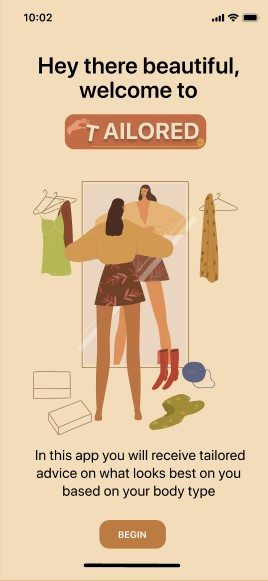
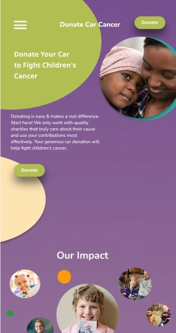

Farah Al Halabi 
Fashion App Based on Body Type 
Public Speaking
i like public spekaing because i feel like i can change minds which can change the world!
UX Research
i like to do user research because i like to sit with people and understand them and try to find a solution for what they are looking for.
Usability Testing
what is better then user research you may ask? usabikity testing! this is where the hard work pays off and you get to see what people really thnk about your product and edit it to fit them perfectly.
Donate Car Cancer NGO Redesign 
My Projects
Contact me